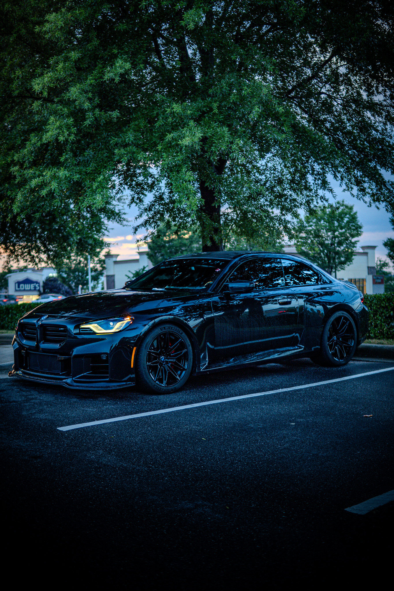
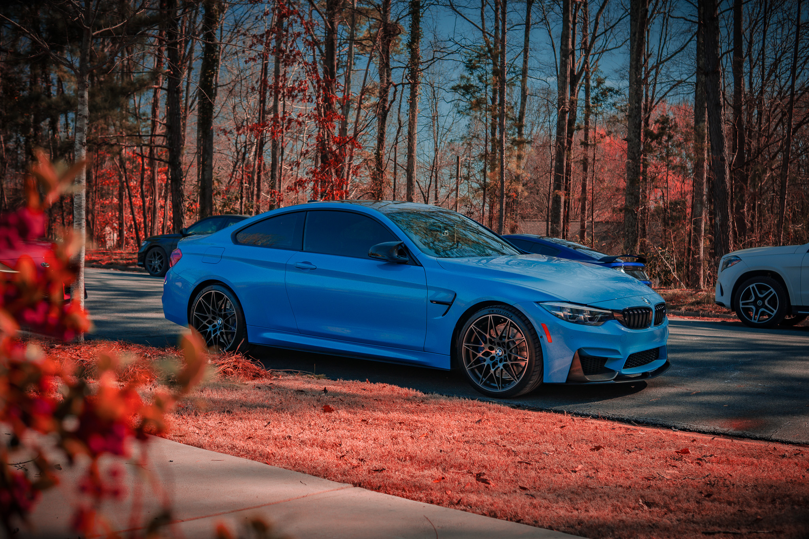

02 — KIND WORDS
From past clients
"Isaiah locked onto our brand vibe immediately. We got moody lifestyle images and a vertical reel that plugged straight into our socials. Smooth process and fast delivery."

02 — KIND WORDS
"Isaiah locked onto our brand vibe immediately. We got moody lifestyle images and a vertical reel that plugged straight into our socials. Smooth process and fast delivery."
02 — KIND WORDS
"My birthday shoot felt easy from start to finish. Isaiah gave simple direction, kept the vibe relaxed, and the photos came out clean and cinematic. I got my gallery back fast and loved every shot."
02 — KIND WORDS
"Dammnnn these came out good af!"

03 — THE WORK
